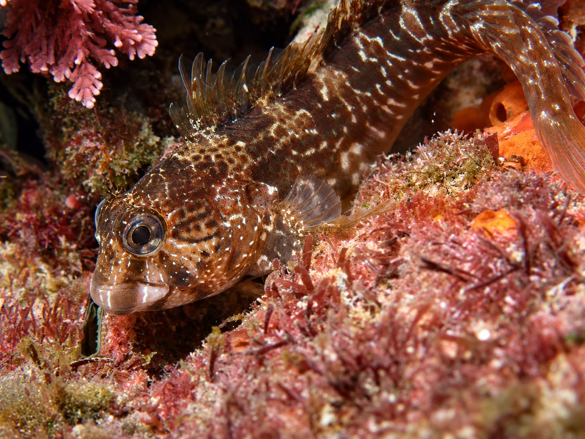

A. Scartella cristata

Representative feeding sounds presented at the conference poster.


Audio clips were high-pass filtered at 260 Hz to reduce low-frequency machine-borne noise and normalized for playback.